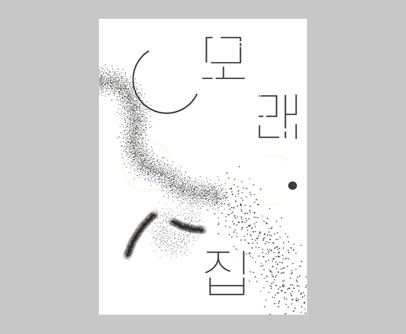

Graphic Poster Design
-
최은영 『내게 무해한 사람』 중
'모래로 지은 집'
소설집 속 단편을 그래픽 형태로 기록했다.
두 가지 버전 중 마지막은 '모래 집'이란 텍스트를 점자로 기록한 것.
모래는 극 중 인물의 이름일 뿐이지만, 셋의 관계 속에 가장 잘 어울리는 단어라고 생각했다. 아스라이 위태로운 모래 산과 흩어지는 조각들.
'모래로 지은 집'은 내게 여러가지로 중의적인 의미를 띈다. 친구들과 모여 앉아 흙을 쌓으며 놀던 따뜻한 어린시절이 떠오르지만, 동시에 차갑기도 한. 이젠 돌아갈 수 없음을 알기에 허망하고, 잡히지 않는 현실을 자각시키는 단어이기도 했다.
그렇게 나와 누군가의 어느 지점에 비슷하게 존재했을 관계와 이야기들. 공무와 모래. 나는 흩어지는 그 모래가 좋았다.